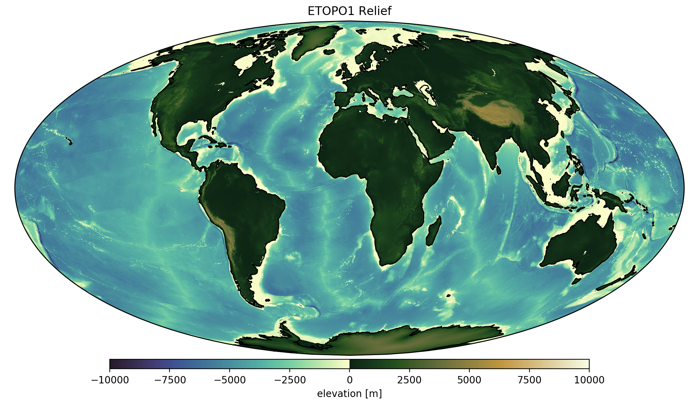
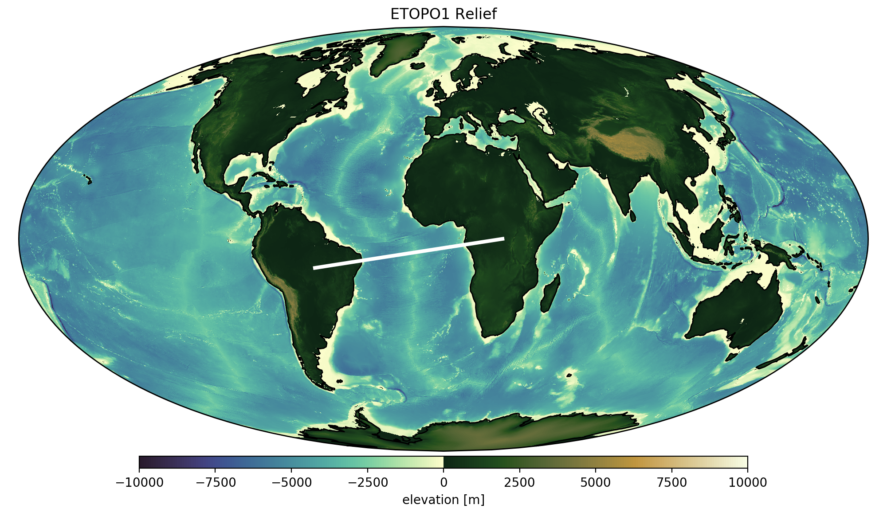
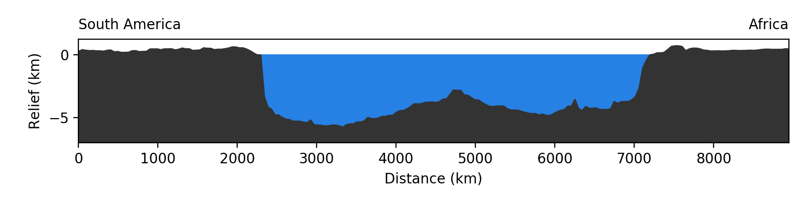
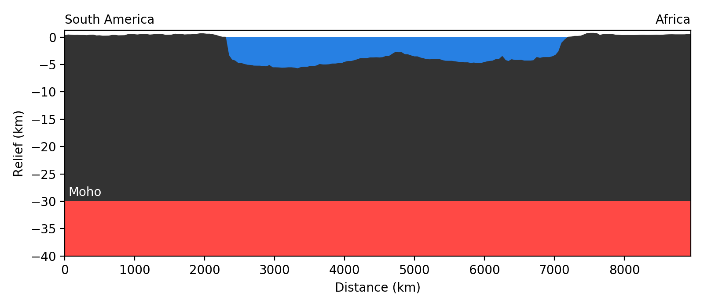
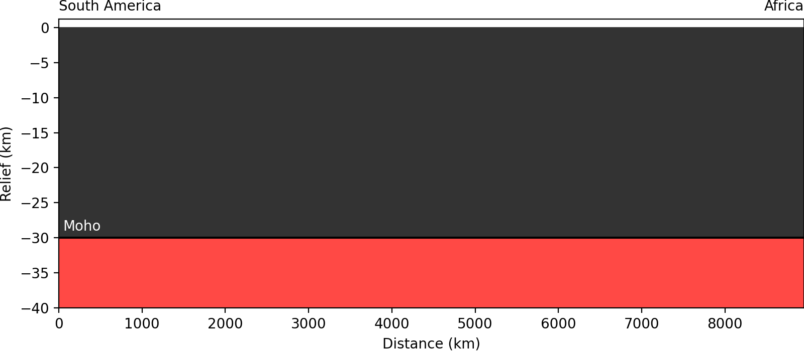
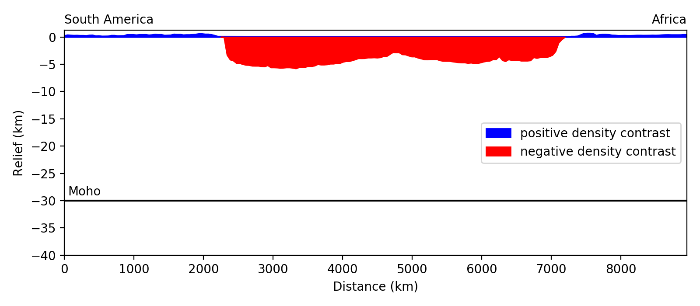
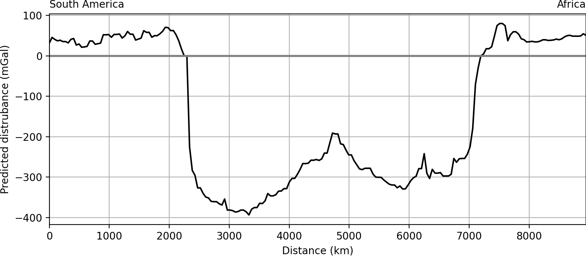
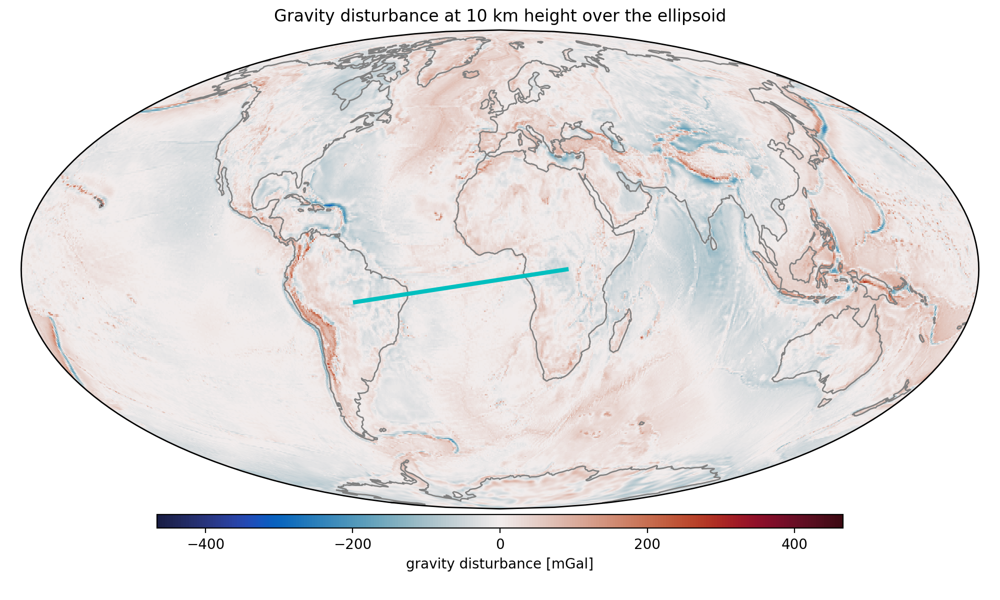
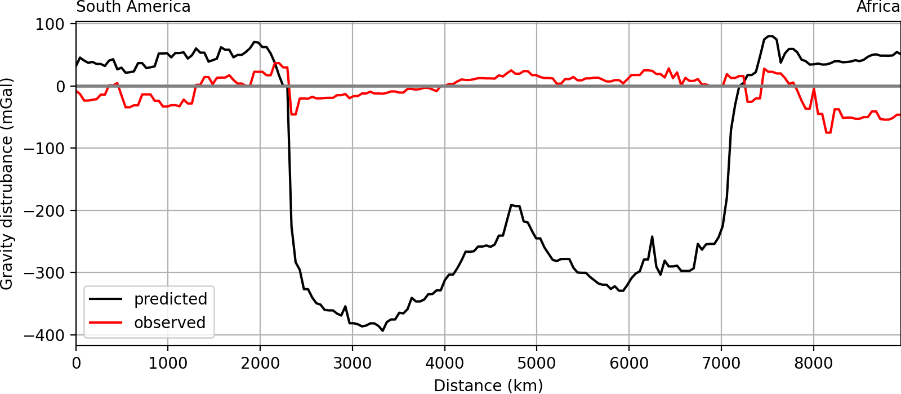

ENVS398 Advanced Geodynamics | Part 2 - The Lithosphere
Isostasy and Plate Flexure
Leonardo Uieda uieda@liverpool.ac.uk Herdman Building - A2.06
What plates look like on the outside
What plates look like on the outside
Profile across the Atlantic
What does the lithosphere look like in depth?
Hypothesis: Moho is flat
How would you test this hypothesis?
Divide into small groups and discuss (5 min)
Possible geophysical methods:
- Seismic (refraction, tomography, receiver functions)
- Magnetotellurics
- Gravity disturbances
Gravity disturbances
disturbance = observed gravity - normal gravity
at the same point
$\delta g (P) = g_{obs}(P) - \gamma (P)$
Normal Earth
What is left in the disturbance
Predicted gravity disturbance
Calculate using a Bouguer plate approximation:
$g_{plate} = 2 \pi G \rho h$
$h$ is the thickness of the plate, not "height".
Predicted gravity disturbance
Does it match observations?
Gravity of the Earth

Gravity of the Normal Earth

Gravity disturbance

Gravity disturbance
Prediction versus observation
Hypothesis is rejected ❌
Isostatic compensation
Pressure must be the same at compensation depth.Airy-Heiskanen
Explain and derive equations. Calculate Moho and plot. Show discrepancies.Pratt-Hayford
Calculate density difference in the spreading center?Disturbance of compensated masses
Show why it should be close to zero (Bouguer plate)Is the entire Earth isostatically compensated?
Island chains and flexure
Profile across Oahu of disturbance and topography. Vening-Meinesz compensation as plate flexure. Show equation for 1D flexure. Show solution that best fitsConvergent boundaries
Show profiles across convergent boundaries to show flexure.The oceanic lithosphere
Show the Pratt solution again. What do we know about this? How is it formed and why is it isostatically compensated?Data sources
Source code
Python code for making the figures shown in this lecture are available in a Jupyter notebook:
References
- Cox, G. M., Lyons, T. W., Mitchell, R. N., Hasterok, D., & Gard, M. (2018). Linking the rise of atmospheric oxygen to growth in the continental phosphorus inventory. Earth and Planetary Science Letters, 489, 28–36. https://doi.org/10.1016/j.epsl.2018.02.016
- Müller, R. D., Sdrolias, M., Gaina, C., & Roest, W. R. (2008). Age, spreading rates, and spreading asymmetry of the world’s ocean crust. Geochemistry, Geophysics, Geosystems, 9(4). doi:10.1029/2007GC001743
"ENVS398 Advanced Geodynamics" by Leonardo Uieda is licensed under a Creative Commons Attribution 4.0 International License.
Source code: leouieda/envs398